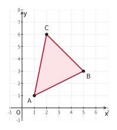

例題 3図形と方程式 点と直線の距離と三角形の面積
3点 \(A(1,\ 1)\)、\(B(5,\ 3)\)、\(C(2,\ 6)\) を頂点とする \(\triangle ABC\) の面積を求めよ。
解き方（まず考え方）
点 \((x_0,y_0)\) と直線 \(ax+by+c=0\) の距離 \[d=\dfrac{|ax_0+by_0+c|}{\sqrt{a^2+b^2}}\] 三角形の面積は 底辺 \(AB\)（長さ）と、頂点 \(C\) から直線 \(AB\) までの距離 \(d\) で \(S=\dfrac12\,AB\cdot d\)。
コツ面積は「底辺×高さ÷2」。高さは、点と直線の距離の公式がそのまま使える。
解答
STEP 1 直線 \(AB\) の方程式を求める
\(A(1,1),\ B(5,3)\) を通る直線。傾き \(\dfrac{3-(1)}{5-(1)}\)。
\[x-2y+1=0\]STEP 2 線分 \(AB\) の長さ
\[AB=\sqrt{(5-(1))^2+(3-(1))^2}=\sqrt{20}=2 \sqrt{5}\]
STEP 3 点 \(C\) と直線 \(AB\) の距離
点と直線の距離の公式 \(d=\dfrac{|ax_0+by_0+c|}{\sqrt{a^2+b^2}}\)。
\[d=\dfrac{|1\cdot(2)+(-2)\cdot(6)+(1)|}{\sqrt{1^2+(-2)^2}}=\dfrac{9}{\sqrt{5}}=\dfrac{9 \sqrt{5}}{5}\]STEP 4 面積を求める
\[S=\dfrac12\cdot AB\cdot d=\dfrac12\cdot2 \sqrt{5}\cdot\dfrac{9 \sqrt{5}}{5}=9\]

【答案（テストに書く形）】
\[S=9\]答
練習問題 3
- 3点 \(A(-2,\ 0)\)、\(B(4,\ 2)\)、\(C(1,\ 7)\) を頂点とする \(\triangle ABC\) の面積を求めよ。
- 3点 \(A(0,\ -3)\)、\(B(6,\ 1)\)、\(C(-1,\ 4)\) を頂点とする \(\triangle ABC\) の面積を求めよ。
- 3点 \(A(3,\ 2)\)、\(B(-1,\ 5)\)、\(C(6,\ 7)\) を頂点とする \(\triangle ABC\) の面積を求めよ。